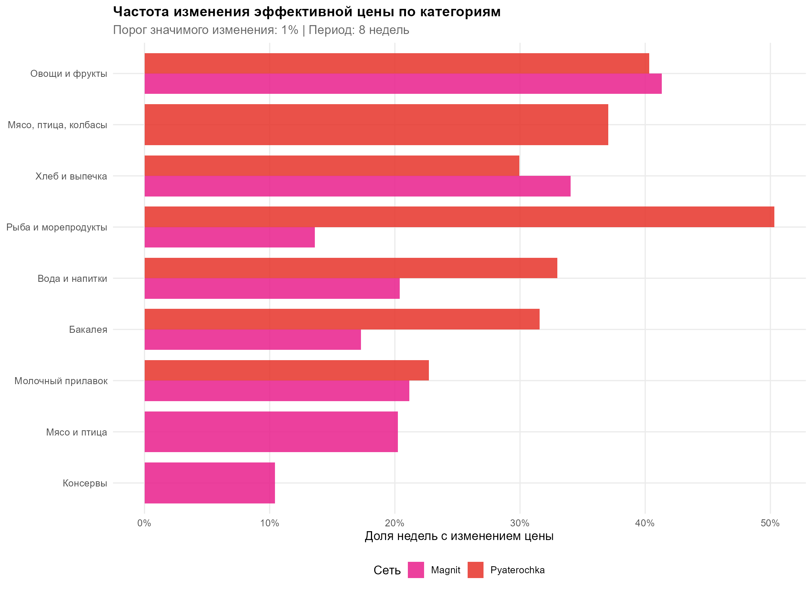
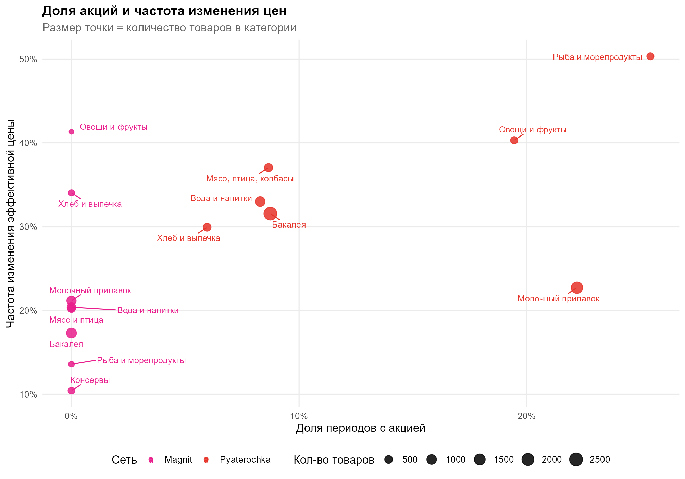
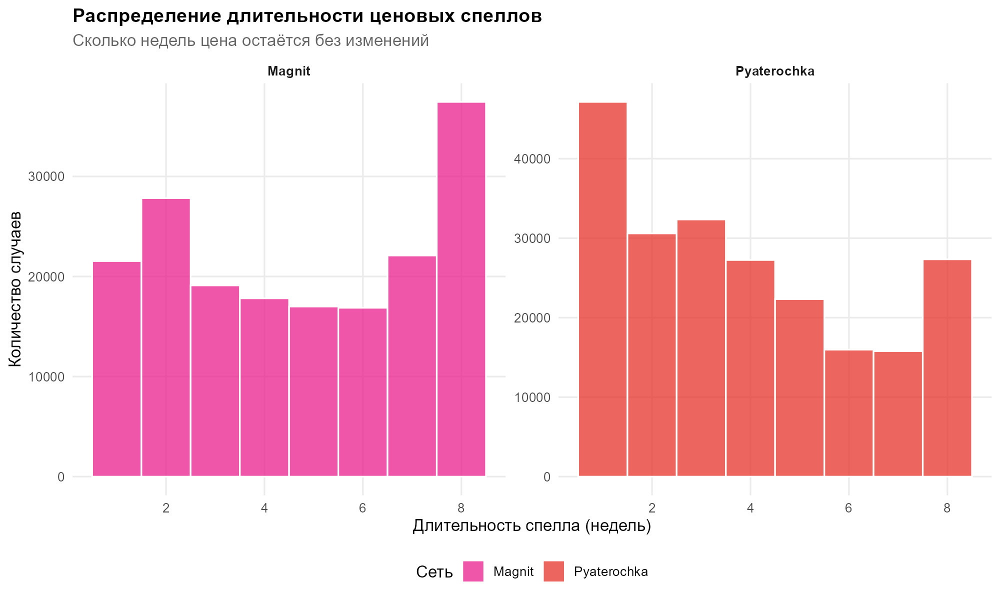
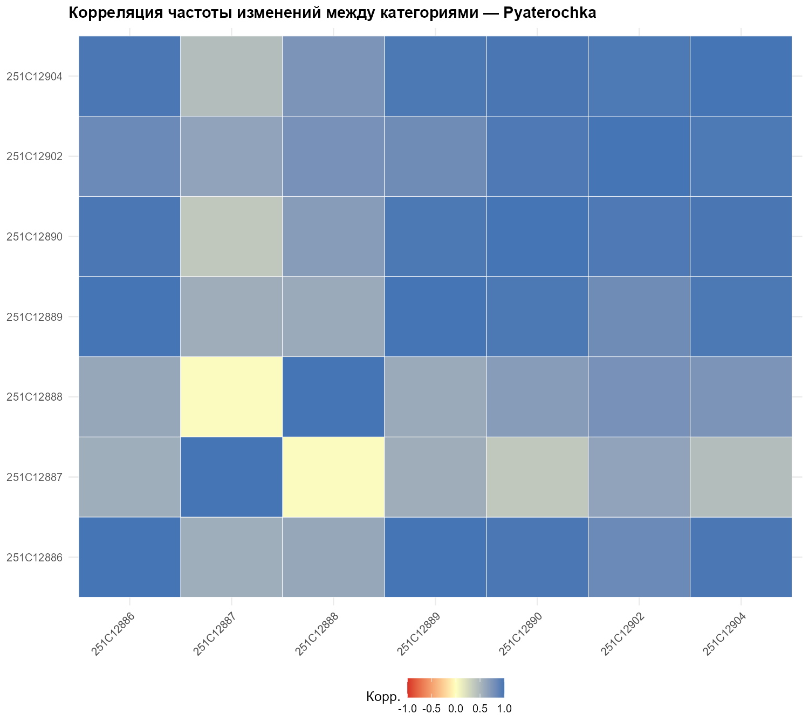
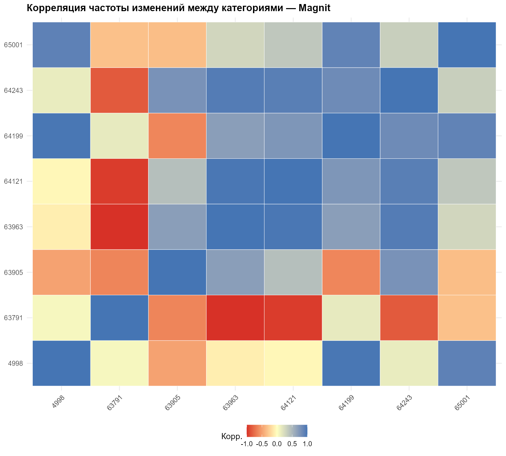

01Описательные метрики ценовой
липкости
Таблицы: 01_chain_stickiness.csv/.html ·
02_category_stickiness.csv/.html | Графики:
01_freq_by_category.png ·
02_promo_vs_freq.png ·
03_spell_distribution.png
Методология. Для каждой пары (товар, неделя):
freq_effective — доля недель с
|ΔP_eff| > 1%; freq_regular — то же для
регулярной цены; promo_share — доля периодов с активной
акцией (is_promo = TRUE); avg_promo_depth =
(P_reg − P_eff) / P_reg по акционным периодам;
avg_spell_length — средняя длина «ценового спелла» (RLE по
неизменным эффективным ценам). Агрегация по сети — взвешенное среднее по
n_obs.
Таблица 01 — Сводка по сетям
01_chain_stickiness.csv
| Сеть |
Частота ΔP рег. |
Частота ΔP эфф. |
Ср. ΔP эфф. |
Доля акций UPD
|
Глубина акции UPD
|
Ср. спелл, нед |
Волатильность |
Категорий |
Товаров |
| Пятёрочка |
27.0% |
32.4% |
12.5% |
13.2% |
20.2% |
4.2 |
10.0% |
7 |
7 375 |
| Магнит |
15.8% |
20.9% |
18.0% |
37.7% |
25.1% |
5.3 |
10.7% |
8 |
4 446 |
🔄
Ключевое изменение после исправления: Магнит оказался
значительно более промо-активным, чем Пятёрочка —
37.7% vs 13.2% периодов с акциями, глубина скидки
25.1% vs 20.2%. До исправления promo_share Магнита
ошибочно показывал 0%. Теперь видно, что у Магнита принципиально
другая стратегия: регулярные цены очень стабильны (15.8%), зато
промо-активность — самая высокая.
💡
Две разные ценовые стратегии:
Пятёрочка практикует умеренное гибкое ценообразование —
регулярные цены меняются часто (27%), промо умеренные (13%, скидка
20%). Магнит практикует стратегию Hi-Lo — регулярные цены
очень стабильны (15.8%), но агрессивные частые промо (38%, скидка 25%)
создают высокую частоту изменений эффективной цены.
Таблица 02 — Липкость по категориям
02_category_stickiness.csv
| Сеть |
Категория |
Частота ΔP рег. |
Частота ΔP эфф. |
Ср. ΔP эфф. |
Доля акций UPD
|
Глубина акции UPD
|
Ср. спелл, нед |
| Магнит |
Консервы |
8.1% |
11.7% |
13.8% |
53.2% |
20.9% |
6.6 |
| Магнит |
Рыба и морепродукты |
11.7% |
14.2% |
21.7% |
57.1% |
26.9% |
5.9 |
| Магнит |
Бакалея |
11.9% |
17.8% |
18.0% |
36.9% |
24.8% |
5.7 |
| Магнит |
Молочный прилавок |
18.8% |
20.7% |
14.5% |
37.9% |
26.9% |
5.2 |
| Магнит |
Вода и напитки |
18.8% |
21.6% |
13.8% |
21.4% |
18.3% |
5.1 |
| Магнит |
Мясо и птица |
12.4% |
20.0% |
32.1% |
60.7% |
38.6% |
4.9 |
| Магнит |
Хлеб и выпечка |
14.6% |
34.0% |
24.2% |
35.1% |
24.5% |
3.9 |
| Магнит |
Овощи и фрукты |
35.4% |
39.9% |
15.7% |
5.5% |
21.9% |
3.6 |
| Пятёрочка |
Молочный прилавок |
21.6% |
24.3% |
10.3% |
20.4% |
21.5% |
4.8 |
| Пятёрочка |
Хлеб и выпечка |
25.4% |
29.5% |
11.8% |
6.1% |
17.9% |
4.5 |
| Пятёрочка |
Бакалея |
27.2% |
31.3% |
11.9% |
9.0% |
21.7% |
4.3 |
| Пятёрочка |
Вода и напитки |
28.3% |
31.9% |
12.0% |
8.9% |
17.2% |
4.2 |
| Пятёрочка |
Мясо и птица |
28.6% |
36.4% |
16.0% |
9.0% |
21.6% |
4.0 |
| Пятёрочка |
Овощи и фрукты |
29.6% |
43.2% |
17.2% |
20.3% |
19.0% |
3.6 |
| Пятёрочка |
Рыба и морепродукты |
37.7% |
50.3% |
13.9% |
25.5% |
17.3% |
3.0 |
⚠️
У Магнита разрыв между freq_regular и
freq_effective теперь объясняется промо: категория «Мясо
и птица» меняет регулярную цену лишь в 12.4% недель,
но эффективную — в 20.0%, при этом 60.7% периодов —
акционные. Значит промо-акции создают значительную долю событий
изменения эффективной цены у Магнита, а регулярные цены при этом
остаются высокостабильными.
Графики раздела

График 01 · 01_freq_by_category.png — Частота
изменения эффективной цены по категориям (bar chart). Ось Y — доля
недель с изменением цены. Для каждой категории — столбцы по сетям.

График 02 · 02_promo_vs_freq.png — Scatter-plot «доля
акций vs частота изменений». Размер точки = количество товаров. После
исправления точки Магнита смещены вправо (высокий promo_share).
Корреляция промо и частоты изменений прослеживается для обеих сетей.

График 03 · 03_spell_distribution.png — Гистограмма
длительности ценовых спеллов (в неделях) для каждой сети. Магнит:
правостороннее смещение, длинные спеллы регулярных цен. Пятёрочка: пик
на коротких спеллах.
02Корреляции и синхронность
Таблицы: 03_cross_chain_correlations.csv/.html ·
04_intercategory_cors.csv ·
05_intercategory_summary.csv | Графики:
04_intercategory_cor_pyaterochka.png ·
05_intercategory_cor_magnit.png
Методология. Для каждой (сеть, категория, неделя)
рассчитывается chg_rate — средняя доля товаров с изменением
эффективной цены. Строится wide-таблица по неделям.
Кросс-цепочечная корреляция — Пирсон между Пятёрочкой и
Магнитом по 8 неделям в каждой категории.
Межкатегорийная корреляция — попарная корреляция
временных рядов chg_rate внутри сети.
Таблица 03 — Синхронность между сетями по категориям
03_cross_chain_correlations.csv
| Категория |
Корр. (частота) |
Корр. (ср. ΔP%) |
Недель |
Интерпретация |
| Мясо и птица |
+0.746 |
+0.345 |
8 |
Высокая синхронность
|
| Бакалея |
+0.477 |
+0.069 |
8 |
Умеренная |
| Молочный прилавок |
+0.118 |
+0.440 |
8 |
Слабая |
| Рыба и морепродукты |
+0.073 |
−0.278 |
8 |
Нет |
| Хлеб и выпечка |
−0.025 |
+0.522 |
8 |
Асинхронность |
| Овощи и фрукты |
−0.296 |
+0.778 |
8 |
Обратная (по частоте)
|
| Вода и напитки |
−0.436 |
+0.082 |
8 |
Обратная синхронность
|
| Консервы |
— |
— |
0 |
Только Магнит |
📝
Кросс-цепочечные корреляции не изменились после исправления данных —
они основаны на частоте изменений эффективной цены
(changed_effective), которая фиксирует факт движения цены
независимо от причины (промо или нет). Структурные выводы о
синхронности остались прежними.
Таблица 05 — Межкатегорийные корреляции внутри сети
05_intercategory_summary.csv
Пятёрочка · медиана
0.718
Межкатегорийная корреляция
Пятёрочка · % положительных
100%
Все пары коррелируют положительно
Магнит · медиана
0.121
Межкатегорийная корреляция
Магнит · % положительных
53.6%
Чуть больше половины пар
💡
Структура ценообразования: В Пятёрочке все 21 пара
категорий коррелируют положительно (медиана r = 0.72) —
централизованное ценообразование. В Магните медиана r
= 0.12, только 53.6% пар положительны —
децентрализованное. Это согласуется со стратегией
Hi-Lo: Магнит запускает промо по категориям независимо, а не
согласованно.

График 04 · Пятёрочка — Тепловая карта попарных
корреляций. Преимущественно синяя — централизованное
ценообразование.

График 05 · Магнит — Пёстрая тепловая карта:
Вода×Овощи (r = −0.91), Консервы×Овощи (r = −0.91). Категории
действуют независимо.
03Декомпозиция дисперсии
Таблица: 06_variance_decomposition.csv/.html |
График: 06_variance_decomposition.png
Методология. Последовательно оцениваются модели через
fixest::feols: Δ_eff ~ 1 | сеть,
~ 1 | категория, ~ 1 | магазин,
~ 1 | сеть+категория,
~ 1 | сеть+категория+магазин. Инкрементальный ΔR²
показывает «чистый» вклад каждого уровня.
Таблица 06
06_variance_decomposition.csv
| Модель (FE) |
R² adj. |
ΔR² (инкрем.) |
Вывод |
| Только сеть |
0.026% |
0.026% |
Наименьший вклад из трёх |
| Только категория |
0.111% |
0.111% |
Категория объясняет больше всего |
| Только магазин |
0.029% |
0.029% |
Незначительный вклад |
| Сеть + Категория |
0.110% |
0.084% |
Сеть поверх категории почти ничего не добавляет |
| Полная модель |
0.114% |
0.003% |
Магазин добавляет ≈ ноль |
📊
Результаты декомпозиции не изменились после исправления промо-данных:
вся вариация Δ_eff слабо объясняется структурными факторами (0.114%
суммарно). Категория — наибольший вклад. Большинство
изменений идиосинкратичны.

График 06 · 06_variance_decomposition.png — Bar chart
трёх «чистых» вкладов в R² adj. Категория доминирует.
04Кластеризация категорий
UPD
Таблицы: 07_cluster_centroids.csv/.html ·
08_category_cluster_assignment.csv | Графики:
07_silhouette_scores.png · 08_cluster_pca.png
Методология. Признаки: freq_effective,
avg_change_effective, promo_share,
volatility, avg_spell_length — взвешенное
среднее по обеим сетям. Матрица стандартизирована
(scale()). K выбирается по максимуму silhouette score.
Финальный K-means: set.seed(42), nstart=50.
После исправления промо-данных Магнита значения
promo_share по категориям существенно изменились, что
повлияло на структуру кластеров.
🔄
Структура кластеров изменилась: оптимальное K
снизилось с 4 до 3. Причина — после учёта промо
Магнита категории перераспределились: старый «акционный» кластер
(Овощи, Рыба) слился с «активными» (Мясо, Хлеб) в один большой кластер
1. Консервы остались в отдельном кластере, но теперь характеризуются
не нулевой долей акций, а наоборот —
максимальной (53.2%) при минимальной частоте
изменений.

График 07 · 07_silhouette_scores.png — Максимум
silhouette score теперь при K = 3 (было K = 4).
Таблица 07 — Центроиды кластеров (K=3)
07_cluster_centroids.csv
Кластер 1
«Активные»
Мясо и птица, Овощи и фрукты, Рыба и морепродукты, Хлеб и выпечка
Частота ΔP эфф.34.3%
Ср. размер ΔP18.6%
Доля акций26.4%
Волатильность14.2%
Ср. спелл4.1 нед
Кластер 2
«Умеренные»
Бакалея, Вода и напитки, Молочный прилавок
Частота ΔP эфф.25.4%
Ср. размер ΔP13.1%
Доля акций20.8%
Волатильность8.6%
Ср. спелл4.8 нед
Кластер 3
«Стабильные цены — активное промо»
Консервы
Частота ΔP эфф.11.7%
Ср. размер ΔP13.8%
Доля акций53.2%
Волатильность6.4%
Ср. спелл6.6 нед
💡
Парадокс Консервов (Кластер 3): самая высокая доля
акций (53.2%) сочетается с самой низкой частотой изменений эффективной
цены (11.7%) и самыми длинными спеллами (6.6 нед). Объяснение: у
Консервов Магнита промо-цена стабильна на протяжении нескольких недель
подряд — то есть акции «долгоживущие», а не разовые. Эффективная цена
не «прыгает» каждую неделю, несмотря на высокий promo_share.
Таблица 08 — Принадлежность категорий к кластерам
08_category_cluster_assignment.csv
| Категория |
Кластер |
Частота эфф. |
Ср. ΔP |
Акции |
Спелл, нед |
| Мясо и птица |
1 |
29.1% |
23.2% |
32.1% |
4.4 |
| Овощи и фрукты |
1 |
42.0% |
16.6% |
15.0% |
3.6 |
| Рыба и морепродукты |
1 |
34.4% |
17.4% |
39.4% |
4.3 |
| Хлеб и выпечка |
1 |
31.6% |
17.4% |
19.2% |
4.2 |
| Бакалея |
2 |
26.5% |
14.0% |
18.9% |
4.8 |
| Вода и напитки |
2 |
26.9% |
12.9% |
14.9% |
4.6 |
| Молочный прилавок |
2 |
22.6% |
12.3% |
28.5% |
5.0 |
| Консервы |
3 |
11.7% |
13.8% |
53.2% |
6.6 |

График 08 · 08_cluster_pca.png — 2D PCA-проекция
категорий с кластерными оболочками. Консервы обособлены по оси
промо-активности. Три кластера хорошо разделены в пространстве PCA.
05Панельная регрессия
UPD
Таблицы: 09_regression_coefs.csv ·
09_regression_results.tex ·
10_regression_gof.csv/.html | График:
09_coef_plot.png
M1:
Δln(P_eff) = β₁·Magnit + β₂·Promo + α_cat + α_week + ε
M2:
Δln(P_eff) = β₂·Promo | cat + week + store
M3 (только Пятёрочка):
Δln(P_eff) = β₂·Promo | cat + week
Зависимая переменная:
dln_effective = log(P_eff / P_eff_lag). FE по
кросс-цепочечному имени категории. SE кластеризованы по магазину
(fixest::feols).
🔄
Знак β(Magnit) изменился на противоположный: было
−0.0087 (Магнит снижал эффективные цены относительно Пятёрочки), стало
+0.0170 (Магнит повышает). Это корректный результат:
теперь модель видит, что у Магнита эффективные цены испытывают бо́льшие
положительные изменения — когда промо заканчивается, цена резко
возвращается к регулярному уровню (более высокому). Эффект промо (β₂)
уменьшился по модулю с −8.4% до −6.4%, но остался
высокозначимым. R² вырос с 4.5% до 6.6%.
Таблица 09 — Коэффициенты
09_regression_coefs.csv
| Регрессор |
Оценка β |
Ст. ошибка |
t-стат. |
p-value |
Спецификация |
| Магнит (vs Пятёрочка) |
+0.01695 |
0.001432 |
+11.83 |
5.2 × 10⁻¹¹ |
M1: FE(cat + week) |
| Промо-акция |
−0.06351 |
0.003250 |
−19.54 |
2.2 × 10⁻¹⁵ |
M1: FE(cat + week) |
| Промо-акция |
−0.06465 |
0.003203 |
−20.18 |
1.1 × 10⁻¹⁵ |
M2: FE(cat + week + store) |
| Промо-акция |
−0.08461 |
0.003064 |
−27.61 |
9.0 × 10⁻¹¹ |
M3: Только Пятёрочка |
📈
β(Magnit) = +1.70% — Контролируя категорию и период,
в Магните log-изменения эффективной цены в среднем на 1.70 п.п. выше,
чем в Пятёрочке. Причина: окончание глубоких промо у Магнита создаёт
резкие положительные скачки цены назад к регулярному уровню.
β(Promo) = −6.4% — В акционный период эффективная
цена снижается на ~6.4% (log-изменение). Коэффициент устойчив в M1 и
M2. В M3 (только Пятёрочка) эффект выше (−8.5%), что говорит о более
«резких» промо у Пятёрочки по сравнению с Магнитом в рамках одного
периода.
Таблица 10 — Качество подгонки
10_regression_gof.csv
| Спецификация |
N |
R² within UPD
|
R² adj. |
| M1 — Pooled FE(cat+week) |
383 982 |
6.63% |
6.62% |
| M2 — FE(cat+week+store) |
383 982 |
6.74% |
6.73% |
| M3 — Только Пятёрочка |
212 239 |
8.85% |
8.85% |
📝
R² вырос с 4.5% до 6.6% после исправления
промо-данных Магнита — модель теперь лучше улавливает ценовую
динамику. Разница R² между M1 и M3 (Пятёрочка) сократилась:
промо-эффект у обеих сетей теперь вносит сопоставимый вклад.

График 09 · 09_coef_plot.png — Коэффициентный граф с
95% ДИ. β(Magnit) теперь положительный (выше нуля). β(Promo)
отрицательный во всех спецификациях.
06Проверки устойчивости
UPD
Таблицы: 11_robustness_coefs.csv ·
11_robustness_table.csv/.html | График:
10_robustness_coef_plot.png
RC1 — Только регулярные цены:
log(P_reg / P_reg_lag), промо исключены. Сохраняется ли
эффект Магнита без влияния промо?
RC2 — Порог 0.5% вместо основных 1%. Чувствительность к
выбору порога.
RC3 — Без выбросов (|Δln(P)| ≤ 50%). Не
искажают ли результат экстремальные изменения?
Таблица 11 — Сводная таблица robustness
11_robustness_table.csv
| Спецификация |
β(Magnit) |
SE |
p |
β(Promo) |
SE |
p |
Знак Magnit |
| Основная (M1) |
+0.01695 |
0.001432 |
*** |
−0.06351 |
0.003250 |
*** |
↑ |
| RC1: Только рег. цены |
+0.00394 |
0.000374 |
*** |
— |
— |
— |
↑ |
| RC2: Порог 0.5% |
+0.04270 |
0.003080 |
*** |
−0.20669 |
0.008480 |
*** |
↑ |
| RC3: Без выбросов |
+0.01465 |
0.001295 |
*** |
−0.05440 |
0.003652 |
*** |
↑ |
✅
Аномалия смены знака исчезла. До исправления
β(Magnit) в M1 был отрицательным (−0.87%), а в RC1 — положительным
(+0.36%), что создавало противоречие. Теперь β(Magnit)
положителен во всех четырёх спецификациях (+0.39% в
RC1, +1.70% в M1, +4.27% в RC2, +1.47% в RC3). Результаты полностью
согласованы.
💡
Интерпретация β(Magnit) по спецификациям:
RC1 показывает наименьший эффект (+0.39%) — регулярные цены Магнита
растут лишь чуть быстрее. M1 и RC3 дают +1.5–1.7% — это эффект с
учётом окончания промо (возврат к регулярной цене). RC2 даёт +4.3% —
при низком пороге захватываются мелкие ценовые движения, усиливая
эффект. Диапазон устойчив по знаку: Магнит стабильно показывает
бо́льший рост лог-изменений эффективной цены.
⚠️
Эффект промо в RC2 существенно больше (−20.7% против −6.4% в M1) — при
пороге 0.5% в выборку попадает больше «мелких» изменений, среди
которых промо-скидки статистически сильнее. Это нормальный артефакт
выбора порога, а не реальное различие.

График 10 · 10_robustness_coef_plot.png —
Коэффициент-плот по всем спецификациям. Все точки β(Magnit) правее
нуля — знак устойчив. β(Promo) стабильно отрицателен.
Ключевые выводы
1
Цены Пятёрочки менее «липкие» по частоте (32.4% vs
20.9%), но Магнит компенсирует это крупными изменениями (+18.0% за
событие vs +12.5%). Медианный спелл Магнита — 5.3 нед, Пятёрочки — 3.9
нед.
2
Магнит — более промо-активная сеть: 37.7% периодов с
акциями и глубина скидки 25.1%, против 13.2% и 20.2% у Пятёрочки. До
исправления данных это не было видно. Магнит практикует стратегию
Hi-Lo: стабильные регулярные цены + агрессивные краткосрочные промо.
3
Структура ценообразования различается принципиально:
Пятёрочка — централизованная (медиана межкатегорийной корреляции 0.72,
100% пар положительны); Магнит — децентрализованная (медиана 0.12,
53.6% положительных). Это согласуется со стратегией Hi-Lo: промо
запускаются по категориям независимо.
4
Категория объясняет изменчивость цен больше всего (R²
= 0.111%), далее — магазин (0.029%) и сеть (0.026%). Суммарно — лишь
0.114%: большинство изменений идиосинкратичны. Этот результат не
изменился после исправления данных.
5
Три типа категорий (K=3): «активные» (Мясо, Овощи,
Рыба, Хлеб — высокая частота и изменчивость), «умеренные» (Бакалея,
Вода, Молочный), «стабильные цены — активное промо» (Консервы: высший
promo_share 53.2% при минимальной частоте изменений 11.7%).
6
Панельная регрессия (N = 383 982): промо снижает
эффективную цену на ~6.4% за период (высокозначимо,
R² = 6.6%). Магнит демонстрирует более высокие log-изменения
эффективной цены на +1.70% относительно Пятёрочки —
следствие резких скачков назад при окончании глубоких промо.
7
Робастность — значительно улучшилась: после
исправления данных β(Magnit) устойчиво положителен во всех 4
спецификациях (RC1, RC2, RC3, M1). Аномалия смены знака, которая
наблюдалась ранее, исчезла. Эффект промо стабилен от −5.4% до −20.7% в
зависимости от порога.